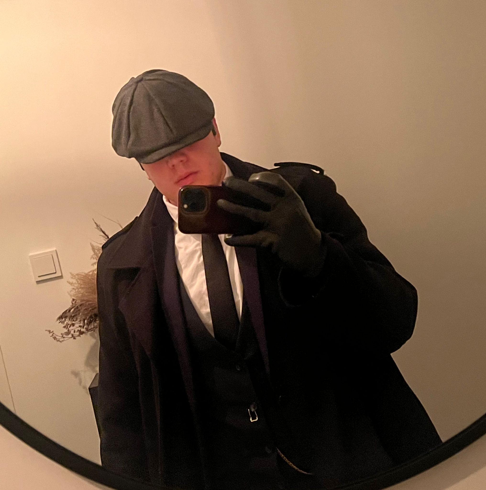
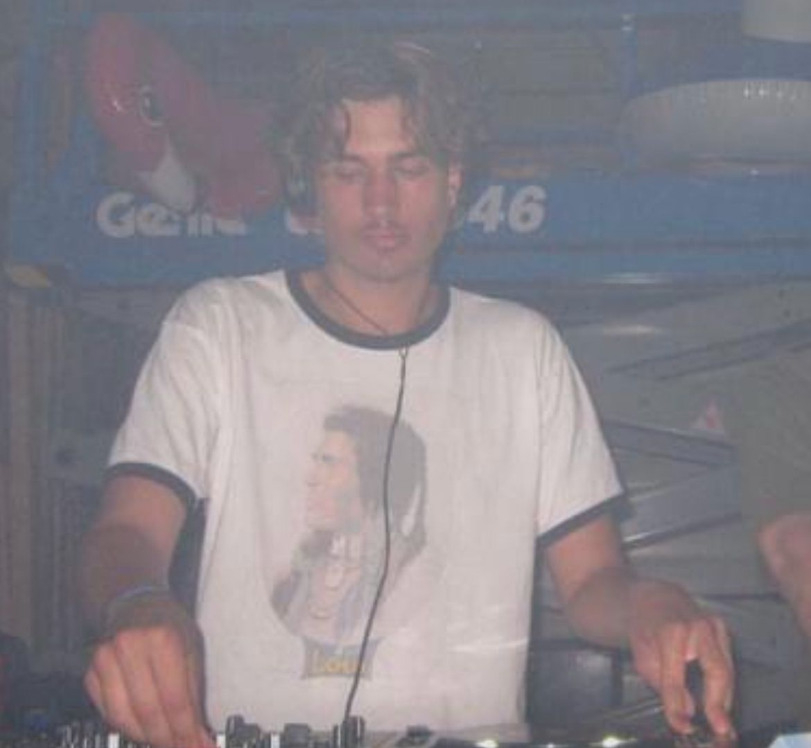

Ronald Lommers
Ronald is a true music enthusiast with a love for rock and country. Whether it’s the gritty riffs of classic rock or the stories hidden in a country song, Ronald captivates you with his passion. He brings structure and creativity to our podcast, ensuring that every story is told in just the right tone.
Senuk Wickramasinghe

Born and raised in Sri Lanka, Senuk brings a touch of international flair to the podcast. He’s passionate about R&B and indie music and always knows exactly how these genres can move people. With his calm voice and sharp insights, he guides you through the story behind the music.
Dex Vkesteren
Dex is our resident DJ and techno enthusiast. In addition to his love for mixing, he knows everything about the structure of electronic tracks and the energy of a great beat. His fresh perspective ensures the podcast always grooves and surprises.